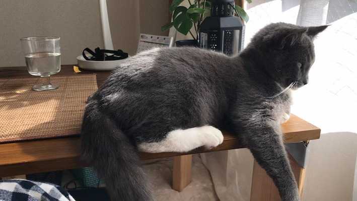
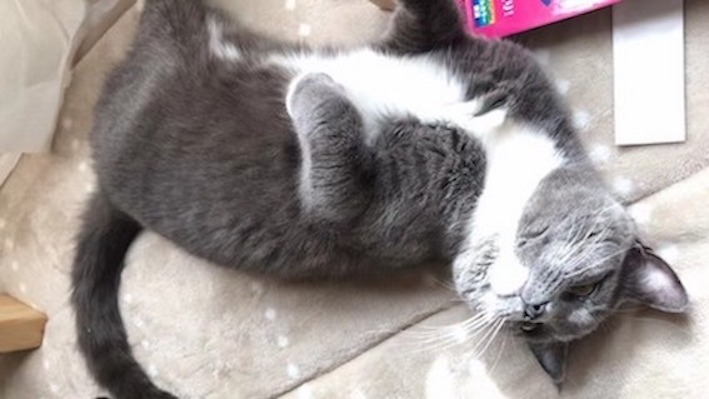
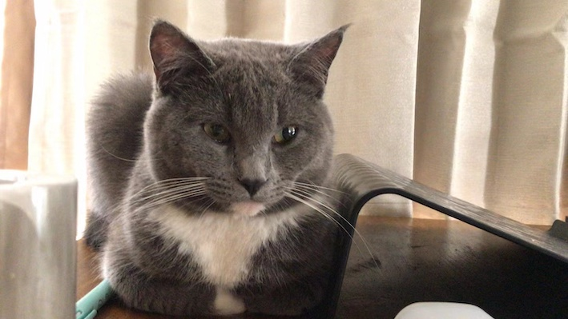

MY SKILLS
- HTML5
- CSS3
- JavaScript
WORKS
猫のサイト
「クリエイティブな仕事をしたい。でも、具体的にやりたいことはわからない」という方はいませんか？
そういった方は、Webデザインの学習をおすすめします。どんな職業に就いたとしても、Webデザイナーのスキルは無駄にならないどころか、
人生をより豊かにしてくれるからです。

猫のサイト
Webデザイナーとは、その名の通り、Webサイトのデザインを行う人のことです。
クライアントが求めるWebサイトを作るために、美しいデザインと、機能的な構成を提案し、実際にコーディングを行う役割を担っています。

猫のサイト
デザインを行う前には、クライアントの「ヒアリング」、競合サイトの「調査・分析」、コンセプトや構成を決める「サイト設計」、
そしてコンテンツを決める「画面情報設計」を行います。クライアントの課題解決につながる企画と情報設計でなければ、
いくら美しいデザインを施しても効果がなく、ここが極めて重要な工程と言えます。